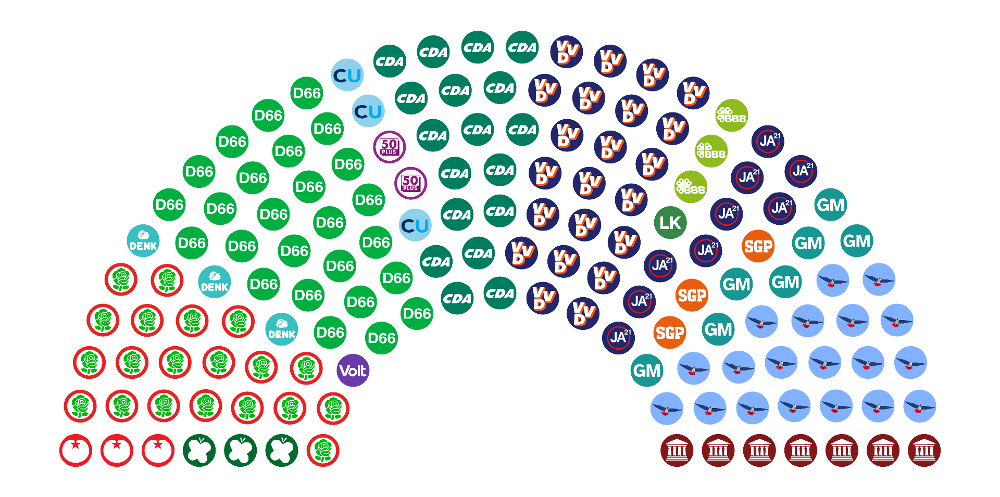
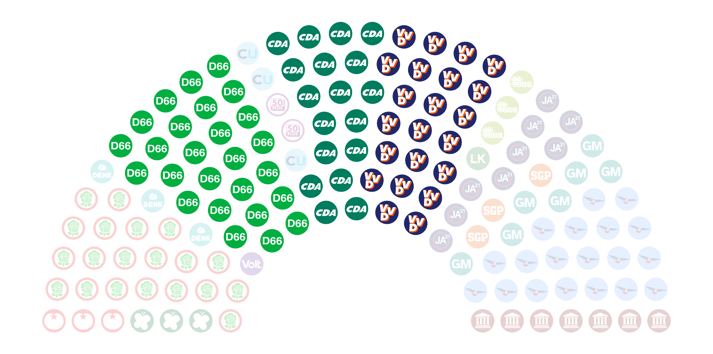
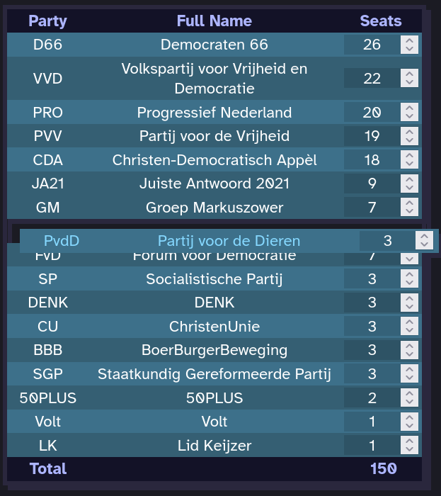
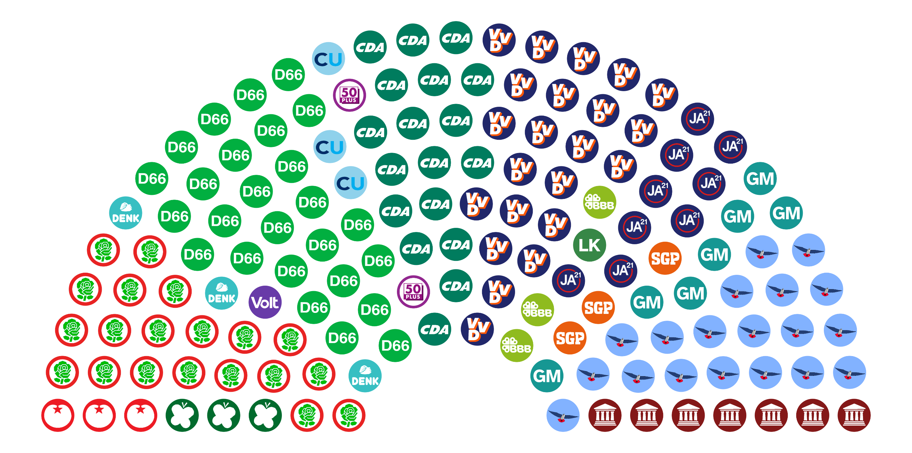
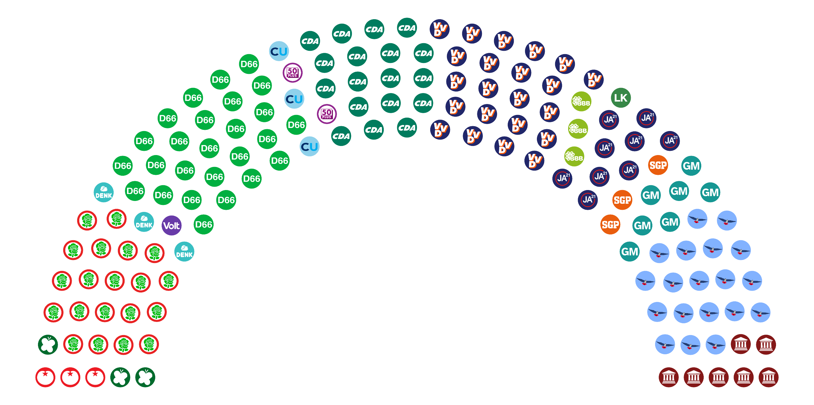
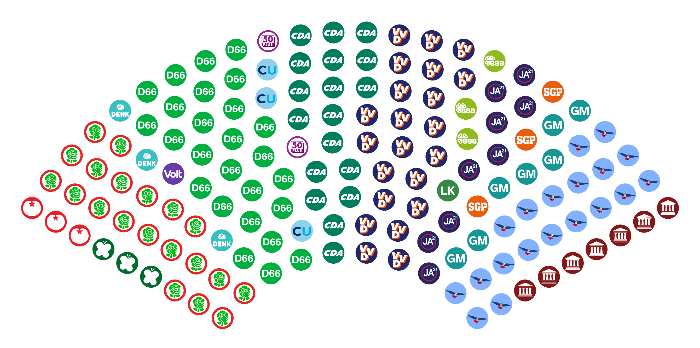
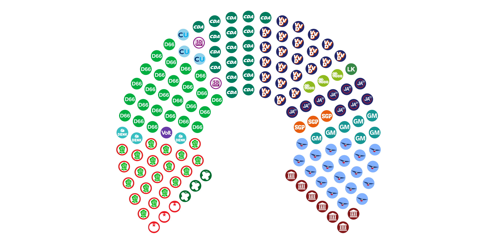
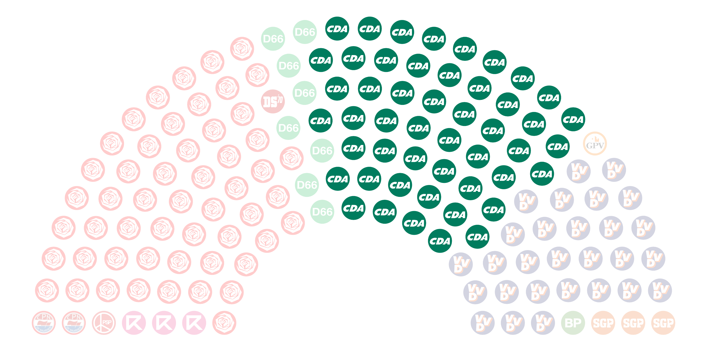
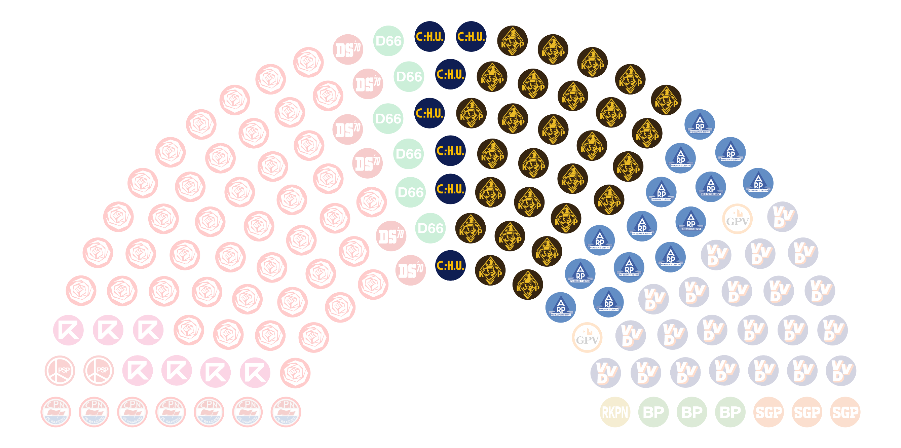

<-- Return to Parliament Viewer
Parliament Viewer - Info
What is Parliament Viewer?

Parliament Viewer is a tool to visualise current and historical seat distributions of various parliaments, senates, congresses, and other political bodies from around the world.
Features include:
- Majority checking - Select one or more parties in the chart or in the table, and see whether these parties together have a majority of seats
- Historical seat distributions - Use the previous/next buttons to flip through a timeline of different election results
- Edit mode - Create and view hypothetical results by changing seat amounts, party order, and adding/removing parties
How do I use it?
Navigation
Select a parliament timeline from the dropdown menu. Each of these corresponds to a specific political governing body, like the US House of Representatives or the UK House of Commons.
The left and right arrows next to the dropdown menu move you through time. Left for the previous election result, right for the next. The double arrows take you all the way to the start or end of the timeline. The data may be incomplete, but you can help by contributing!
Selecting Parties

To select a party, click one of its seats in the diagram, or click its name in the table. Multiple parties can be selected at the same time this way. To deselect a party, click it again. To deselect all parties, click somewhere outside the diagram.
When you've selected at least one party, the bottom of the table shows the total added seat count of the selected parties, and whether those parties together hold a minority, half, or majority of the seats.
Edit Mode
By clicking the pencil icon below the party table, you can edit the parties and their seat counts, e.g. to simulate a hypothetical election result.

When edit mode is active, parties in the table can be dragged and reordered, and their seat counts can now be edited. Aside from the pencil icon, there are six other buttons in edit mode:
| Toggles edit mode on and off. | |
| Discards all changes made in edit mode. | |
| Brings up the party adding menu, which allows adding a custom party. | |
| Deletes all currently selected parties. | |
| Moves the party to the left in the diagram by swapping it with its left neighbour (if it exists). | |
| Moves the party to the right in the diagram by swapping it with its right neighbour (if it exists). | |
| Sorts the table by seat count, in descending order. |
Settings
By changing these settings, you can influence the appearance of the diagram and the behaviour of the program:
| Diagram inner radius | The seat diagram is enclosed between two circular arcs. This setting determines the radius of the inner arc, assuming the outer arc has radius 1. |
  |
| Diagram span angle | This setting determines the span angle (in degrees) of the two circular arcs enclosing the diagram. |
  |
| Auto-select ancestors | If this option is enabled, when a party known to be a rebrand or merger of earlier parties is selected, its ancestors are automatically selected too (which can be seen when moving through the timeline). |
  |
| Party name language | Determines whether party names are displayed in their own native language or in English. 'Local (Romanized)' only differs from 'Local' for languages not written using the Latin Script. |
There's parliaments/data missing!
Yep. This is currently a project we are working on with two people, and there's a lot of election data out there. Have a look at our GitHub page if you'd like to contribute, whether it's by suggesting new features, reporting bugs, or adding more data!
To help contributors (including ourselves), we've made a simple JSON editor and a logo maker specifically for speeding up the process of adding new parties and data.